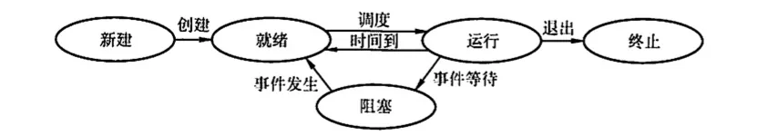
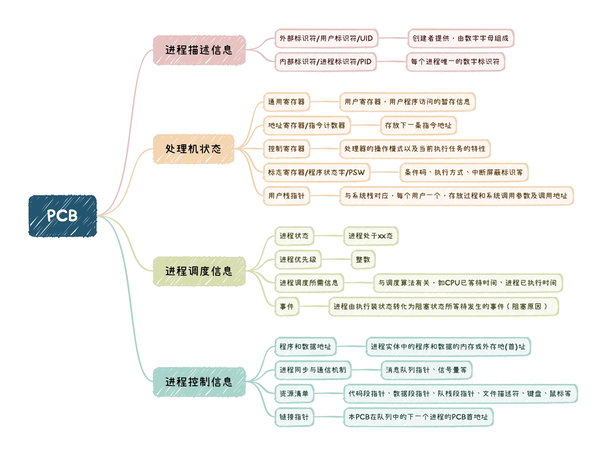
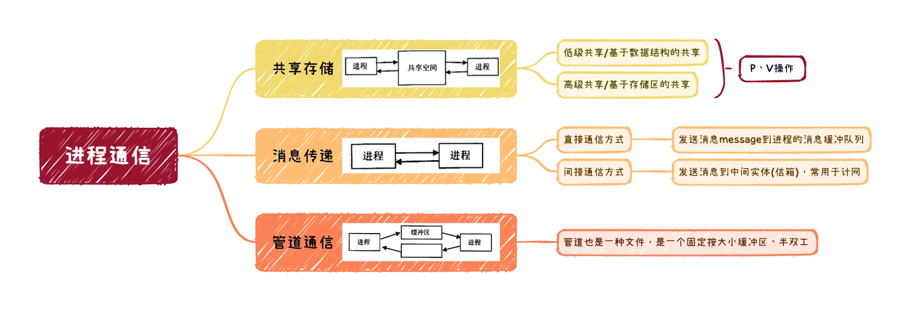
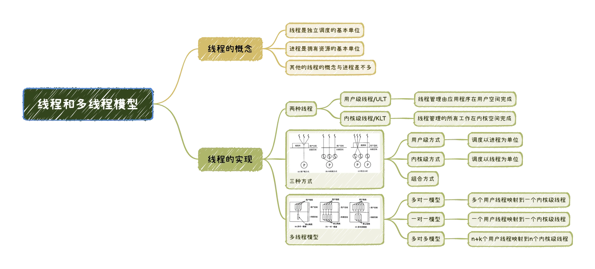

[toc]
本文是《进程与线程》专题的精简总结版，包含概念关键词、图表汇总、易错点汇总。
➡️ 详细版入口
前驱图与程序执行
前驱图(有向无环图，DAG图)
顺序执行与并发执行
进程的概念和特征
进程实体 = 程序段 + 相关数据段 + 进程控制块(PCB)
系统动态 DLL 库中的系统线程，被不同的进程所调用，它们是（相同）的线程。
进程的状态与转换
运行态。在单处理机中，每个时刻只有一个进程处于运行态。
就绪态。系统中就绪状态的多个进程按照一定策略(如优先级策略)排成就绪队列。
阻塞态，又称等待态。可能根据阻塞原因的不同，设置多个阻塞队列。
创建态。若进程所需资源不能满足（如内存不足），则创建工作尚末完成，进程此时处于创建态。
结束态。进程需要结束运行时，系统首先将该进程置为结束态，再进一步处理资源释放和回收等工作。

七态转换：总的来说，就是 “就绪” 与 “阻塞” 都分成了 “静止” 与 “活动” 两半。
在一个多道系统中，若就绪队列不空，就绪的进程数目越多，处理器的效率（不变）。
进程的组织
程序段 + 数据段 + PCB
程序可被多个进程共享，即多个进程可以运行同一个程序

进程的控制
进程的创建，创建原语。
进程的阻塞与唤醒，阻塞原语与唤醒原语，需要成对使用。
进程的通信
父进程与子进程（不能）同时使用同一临界资源。

线程和多线程模型
线程的引入（降低）了程序执行时的时空开销。
